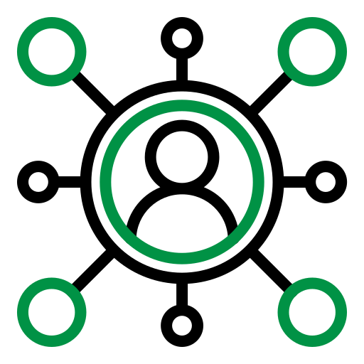

Drag Open Links
v1.0.0
Extension Active
How to Use
🖱️
Hold
Left Click
and drag to select links
📂
Release to open all selected links in new tabs
⌨️
Hold
Shift
to open tabs in background
❌
Press
Esc
to cancel selection
Settings
Max tabs per drag
Open delay (ms)
Show toast notifications
Show link counter badge
Save Settings
Reset Defaults